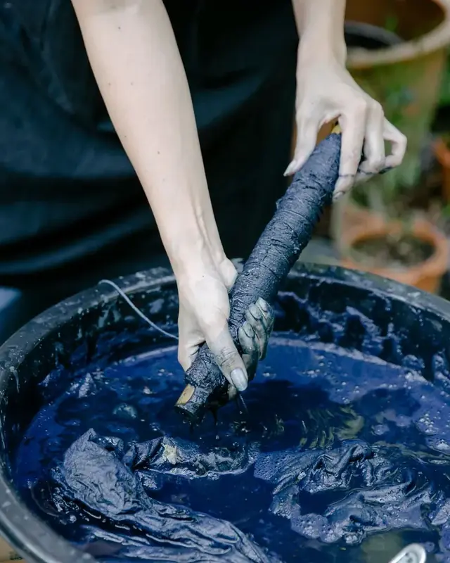
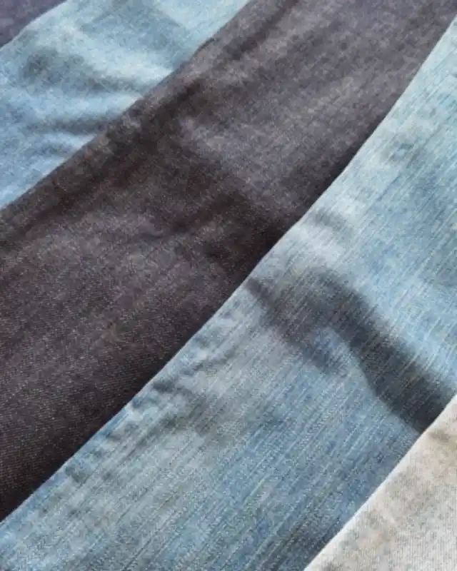
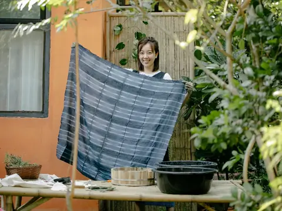
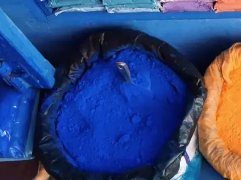
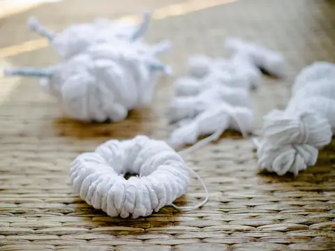
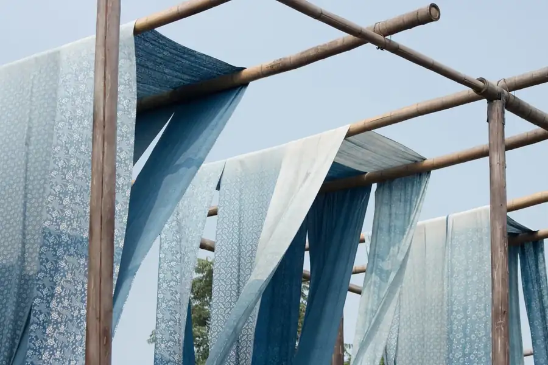
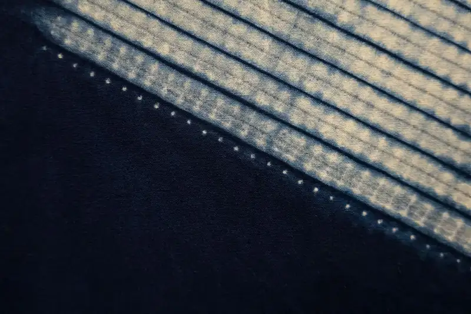
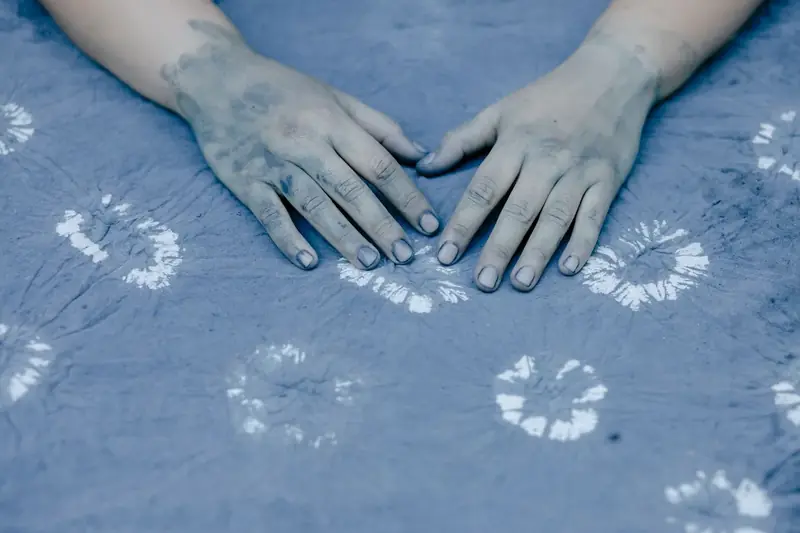

For first-time indigo dyers at home
Build a real indigo vat in a bucket, and get blue on the first try.
VatExp packs plant indigo, slaked lime and fructose in the right proportions, with shibori tools, cotton to practice on and a guide that tells you what the vat should look like at every step.

Dip 2 · What you can count on
Four plain facts, pegged on the line.
Dip 3 · On the shelf
Five things, each with its price.
The shelf is short on purpose. Every item belongs to the same method, the fructose-lime vat, so nothing you order here will fight with anything else in the bucket.

One dye, many strengths. Pale comes from a short stay in a weak vat; near-black comes from many dips and patience.

$48Starter kitIndigo vat starter kit
50 g plant indigo, 100 g slaked lime, 150 g fructose, long gloves, test strips, one bandana and the printed guide. Everything for a first vat except the bucket.

$2250 g pouchNatural indigo powder, 50 g
Finely ground plant indigo in a resealable pouch, for dyers who already keep lime and fructose on the shelf.

$26Tool setShibori tool set
Hardwood blocks, two clamps, a wrapping pole, binding thread and wooden beads: the kit for itajime, arashi and kumo.
- $24Pack of 3
Cotton blanks, pack of 3
Two tea towels and one bandana in plain woven cotton, washed and ready to take dye.
- $30Refill kit
Vat refill kit
A second round of indigo, lime and fructose in the same 1-2-3 proportions, to wake up a tired vat or build a bigger one.
Dip 4 · The vat calculator
Weigh your cloth. The vat sums follow.
Type the dry weight of what you plan to dye and pick a shade. The calculator returns grams of indigo, lime and fructose and tells you which kit covers it. It runs in your browser; nothing is sent anywhere.
Weigh out
- Indigo powder 1 part17.5 g
- Slaked lime 2 parts35 g
- Fructose 3 parts52.5 g
One starter kit covers it, with 32.5 g of indigo left over for topping up.
Open the full calculator with water volume, bucket size and the step-by-step guide
Dip 5 · How the dye room works
A small dye room that sells what it uses.
VatExp is a small indigo dye room in Portland, Maine. We do one thing: put together the supplies for the fructose-lime vat, the gentlest of the traditional ways to make indigo dissolve, and send them to people who want to dye at home. The name is short for vat experiments, because that is how every batch here starts: a bucket, a scale and a notebook.
Indigo is stubborn. The blue powder will not dissolve in water, so a dyer has to coax it into a different form first. In our vat the fructose does the coaxing, which dyers call reduction, and slaked lime keeps the liquid alkaline enough for it to happen. When it works the liquid turns a clear yellow-green under a coppery skin, and a froth of bronze bubbles, the flower, gathers in the middle. Cloth goes in, comes out green, and turns blue in the air while you watch. That change is oxidation, and it is the part nobody gets tired of.
We weigh every kit by hand so the proportions are right before the pouch is sealed, and we test each lot of indigo in our own vat before it goes on the shelf. The printed guide in the box is the same one on this site, with the same photographs in words: what you should see, what it means when you do not, and what to do next.
What we turn down
- No synthetic dyes
- No dyeing to order
- No workshops or classes
- No shipping outside the USA

Fresh from the vat, indigo cloth needs air more than anything. A line and a breeze finish the job.
How an order runs
The order form comes to us
Pick your items and quantities. The page adds up the total as you go, shipping included.A reply from the dye room, one working day at most
That e-mail confirms what you asked for and carries a secure payment link. Until you pay through it, no charge is made.We weigh, pack and ship
Paid orders leave the dye room within two working days, tracked, in a sealed inner bag so no powder escapes.You build the vat
Follow the guide, and write to us with a photograph if the vat misbehaves. We answer vat questions for anyone, kit or no kit.
Dip 6 · Three resists to try first
Blue is the easy half. Pattern is where it gets interesting.
Shibori means keeping dye away from parts of the cloth by folding, binding or clamping it. Wherever the cloth is squeezed, it stays white.

Arashi
Wrap the cloth around a pole, bind it with thread and push it into tight pleats. The result is slanting stripes, like rain in wind.

Kumo
Pinch a point of cloth over a bead and bind it tight. Each bound point opens into a ring; a row of them reads like spider webs.
Stitched resist
Run parallel lines of thread through the cloth and pull them up hard. The gathers leave a soft wood-grain figure.
Dip 7 · Questions dyers ask
Six questions, answered straight.
How many items does one vat dye?
It depends on weight and shade, not on the count of items. The starter kit holds 50 g of indigo. By the dyer’s rule of thumb that is enough for about 1,000 g of dry cotton at a mid blue: roughly fourteen tea towels or six T-shirts. Go pale and it stretches to about 2,500 g; go deep and plan on about 500 g. The calculator does the sum for your own pile of cloth.
How long does a vat last?
Kept under a lid, a fructose-lime vat stays usable for several weeks. It gets tired between sessions: the liquid turns blue-gray and the flower sinks. Warm it, stir in a spoonful of fructose, wait an hour and it usually comes back yellow-green. When no amount of feeding brings the color back, the indigo is spent and it is time for a refill kit.
Why does the cloth come out green?
Because the vat is working. Dissolved indigo is yellow-green, and that is what soaks into the fibers. The moment the cloth meets air the indigo turns back into its blue, insoluble form, now locked inside the fiber. Give each dip at least ten minutes in the air, opening every fold, before you judge the shade or dip again.
Can I dye wool or silk?
You can, with care. The lime that keeps the vat alkaline is harder on wool and silk than on cotton, so keep dips short, rinse well and finish with a splash of white vinegar in the last rinse. Our kits, quantities and guide are written for cotton and linen, and the blanks we sell are cotton, so start there.
Is the vat safe to use indoors?
A fructose-lime vat has a mild earthy smell and gives off no fumes worth worrying about, so a kitchen or laundry room with a window open is fine. Slaked lime is a caustic powder: wear the gloves from the kit, spoon it gently so it does not puff into the air, and wipe up spills with a damp cloth. Keep the lidded bucket where children and pets cannot reach it, and keep dye pots and spoons for dyeing only.
Do you ship outside the USA?
No. We ship to all fifty states and the District of Columbia and nowhere else. Indigo powder and lime travel well inside the country, and we would rather do one thing properly.
Dip 8 · The foot of the cloth
One bucket, one weekend, a line full of blue.
Start with the kit, add the tools and cotton if you want pattern, and keep the guide open beside the bucket.
Reach the dye room
- Mailboxdye@vatexp.com
- HoursWeekdays, 9 in the morning to 4 in the afternoon, Eastern time, is when the dye room answers its mail
- WherePortland, Maine, USA
- We ship toAll fifty states and the District of Columbia
- To orderUse the order form; we confirm by e-mail